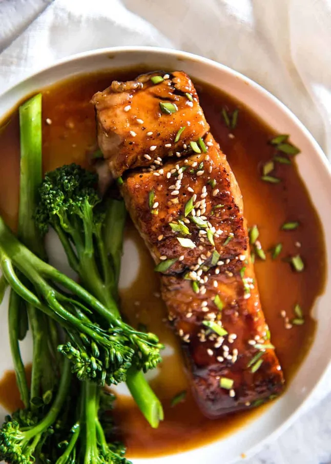

HONEY GARLIC SALMON SAUCE

Description
A delicious and different way to prepare a salmon dish.
This masterpiece consists on its sauce, which is actually
made out of soy sauce, honey, garlic and vinegar.
Besides, it's also an easy and quick way to have a delightful
lunch by your own or to be shared to your family as well. Therefore,
give us your opinion after having tasted it!.
Ingredients
Sauce
- 4 tbsp honey
- 2 tbsp soy sauce (all purpose or light soy sauce)
- 1 tbsp white vinegar (or sub with any other vinegar except balsamic)
- 1 large garlic clove (or 2 small), minced
Salmon
- 2 salmon or trout fillets, skinless (60oz/200g each)
- Olive oil
- Salt
- Pepper
Steps
- Have the salmon out of the fridge 25 minutes before cooking.
- Mix the Sauce ingredients in a small bowl.
- Drizzle oil in a non stick fry pan and heat over medium high heat
(or just under, if your stove runs hot).
Place salmon in the pan, and cook the first side for 3 or 4 minutes until golden.
Turn, then cook the other side for 2 or 3 minutes or until golden.
- Pour Sauce over salmon. Cook for 1 minute or until it starts to thicken slightly.
Check the side of the salmon to tell how cooked
through the middle is
– I like mine medium rare inside. However, if Sauce thickens too much
before your salmon is cooked to your taste, just add water 1 tbsp at a time.
- Remove onto serving plates.
- Serve salmon drizzled with Sauce, sprinkled with sesame seeds and chives/shallots, if desired.
Back